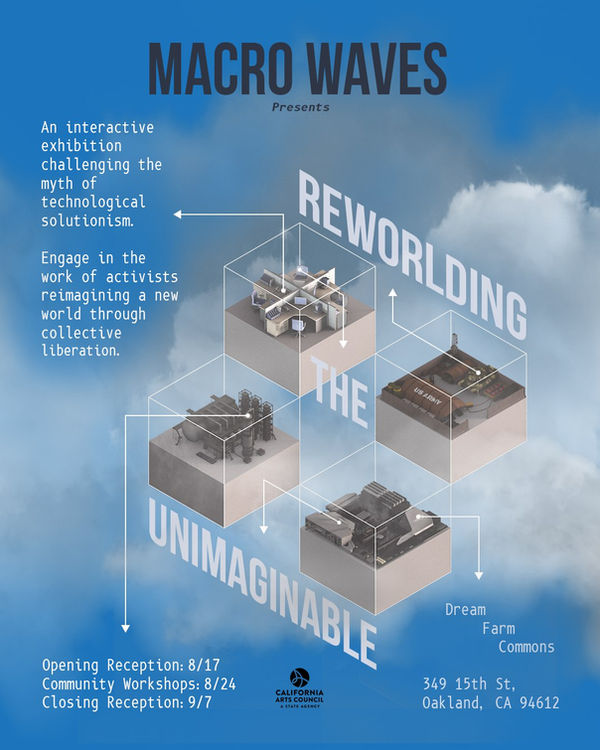

Re-worlding the Unimaginable
August 17 - September 7, 2024
OPEN FRIDAYS AND SATURDAYS 12-6PM
Macro Waves Collective
With support from California Arts Council
Macro Waves is a California-based creative collective producing experiences that center social equity through conceptual art, new media, and design. As artists, designers, and technologists of color, we embrace collaboration in our creative practice of transforming spaces into places for human connection, exploration, and play.
An interactive exhibition challenging the myth of technological solutionism. Engage in the work of activists reimagining a new world through collective liberation.
Through their latest project, Re-worlding the Unimaginable, Macro Waves draws connections between big tech and the global impact of modern-day technology while highlighting ongoing work to create alternative futures. This project goes beyond the influence of science fiction-based themes of future dystopian and utopian narratives and platforms for future world builders of today.
Re-worlding the Unimaginable challenges the myth of technological solutionism (Tech will save us) by examining the militarized history of the tech industry and exposing its deeply intertwined relationship to community destabilization, digital colonialism, and late capitalism.
Re-worlding the Unimaginable focuses on cultural workers, disruptors, activists, and organizers who are radically reimagining the world through their current praxis as a foundation for fighting oppressive systems and envisioning a world that prioritizes people over profit.